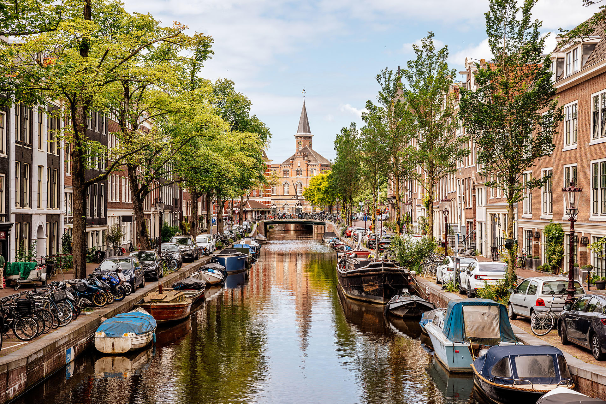

Amsterdam położony jest nad rzekami Amstel i IJ oraz licznymi kanałami (160) – trzy największe w kształcie półksiężyców usytuowane niemalże równolegle do siebie to: Herengracht (położony najbardziej centralnie), Keizersgracht i Prinsengracht. Z nimi łączą się promieniście mniejsze kanały, tworząc sieć wodną dzielącą miasto na liczne wyspy, dlatego Amsterdam nazywany jest często Wenecją Północy. Amsterdam położony jest częściowo poniżej poziomu morza. Jest największym miastem Holandii, dużym ośrodkiem przemysłowym, drugim po Rotterdamie portem handlowym Holandii (dostępnym dla statków oceanicznych), połączonym kanałami z Morzem Północnym i Renem. Ważny ośrodek naukowy (2 uniwersytety, Królewski Instytut Tropikalny) i kulturalny; jest też ważnym ośrodkiem turystycznym z licznymi muzeami (m.in. Rijksmuseum, Muzeum Vincenta van Gogha, Rembrandthuis, Muzeum Tropiku); zabytkami i bogatymi ogrodami botanicznymi. Centrum miasta wraz z kanałami powstało w przeważającej części w XVII wieku (złoty wiek w historii Holandii)